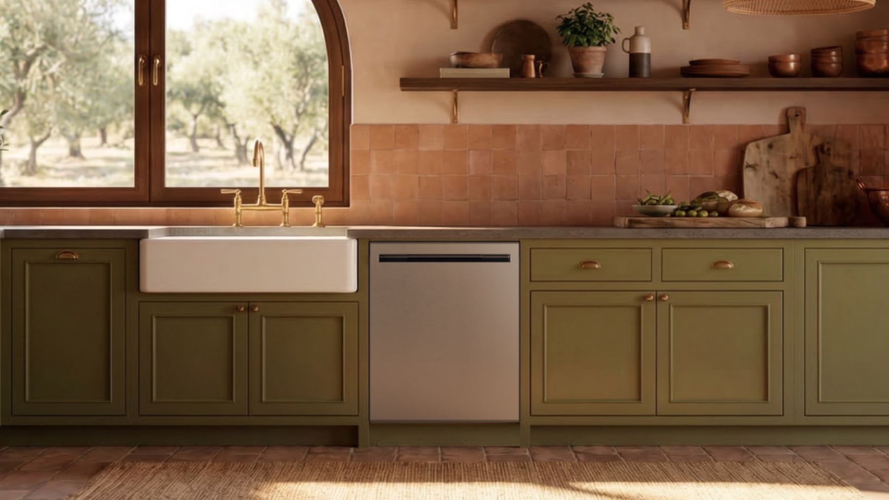

Lavastoviglie con microbolle, vapore e asciugatura attiva: che cosa cambia davvero

Nella lavastoviglie il risultato non dipende soltanto dalla pressione dei getti. Pentole profonde, bottiglie, residui aderenti e stoviglie di forme diverse possono creare zone difficili da raggiungere, mentre l’asciugatura incompleta — soprattutto su plastica e cavità — resta uno dei limiti più percepibili nell’uso quotidiano.
A EuroCucina 2026 LG Electronics ha presentato una nuova piattaforma di lavastoviglie da incasso destinata al mercato europeo. La documentazione ufficiale parla del primo ridisegno completo della piattaforma in nove anni e combina più tecnologie, invece di affidare il miglioramento a un solo ciclo o a un singolo componente.
Il sistema QuadWash Pro affianca ai getti d’acqua la generazione di microbolle. Secondo LG, le bolle aiutano il detergente a penetrare più efficacemente nei residui e possono ridurre la necessità del prelavaggio. Non sostituiscono quindi i getti e non significano automaticamente che ogni punto venga raggiunto: modificano il modo in cui acqua e detergente agiscono sullo sporco.
TrueSteam aggiunge il vapore come funzione selezionabile. Il beneficio dichiarato dal produttore riguarda soprattutto la riduzione degli aloni d’acqua. È importante non trasformare questa caratteristica in una promessa generica di igienizzazione o di eliminazione di qualsiasi residuo, perché il risultato dipende dal programma scelto, dal carico e dal modello effettivo.
Per l’asciugatura, Dynamic Heat Dry+ utilizza un materiale che genera calore mentre assorbe l’umidità presente nella vasca. L’obiettivo è migliorare la circolazione dell’aria, abbreviare i tempi e contenere i consumi. È un aspetto interessante soprattutto quando bicchieri, contenitori e componenti in plastica escono ancora bagnati dai cicli tradizionali.
La gamma introduce inoltre AI SenseClean, che usa un sensore di torbidità per leggere il livello di sporco durante più fasi del ciclo e regolare temperatura dell’acqua, numero dei risciacqui e quantità di detergente. LG dichiara fino a 32 combinazioni di funzionamento; il valore pratico non è la presenza dell’intelligenza artificiale in sé, ma la possibilità di evitare un ciclo uniforme per carichi molto diversi.
Fra le altre soluzioni presentate figurano un ciclo completo di lavaggio e asciugatura in un’ora, il sistema Bottle Wash con ugelli dedicati a bottiglie e recipienti profondi, cestelli regolabili, illuminazione interna e indicazione nascosta del tempo residuo. Alcuni modelli della gamma sono dichiarati in classe energetica A e uno dei modelli selezionati raggiunge un livello sonoro dichiarato di 37 dB.
Dal punto di vista progettuale, la novità non cambia le verifiche fondamentali: larghezza e altezza del vano, profondità utile, posizione degli attacchi, apertura completa dell’anta, accessibilità per la manutenzione, compatibilità del pannello frontale e spazio di passaggio quando la lavastoviglie è aperta. Una migliore tecnologia di lavaggio non corregge un inserimento sbagliato nella cucina.
La documentazione disponibile descrive una gamma e non consente di attribuire tutte le funzioni a qualunque modello commercializzato. Prima dell’acquisto bisogna quindi controllare il codice esatto, la dotazione della variante italiana, la classe energetica, la rumorosità, i programmi inclusi e le condizioni reali del ciclo da un’ora.
Le prestazioni riportate in questo approfondimento derivano dalle dichiarazioni ufficiali del produttore e dalla presentazione di EuroCucina 2026. Sistema 90G non vende il prodotto e non indica un modello da acquistare: valuta la soluzione per i problemi che prova ad affrontare e per le verifiche che restano necessarie nel progetto.
Fonti verificate
https://www.lg.com/global/newsroom/news/home-appliance-solution/lg-electronics-to-showcase-new-dishwasher-lineup-at-eurocucina-2026/
https://www.lg.com/global/newsroom/multimedia/images/lg-electronics-to-showcase-new-dishwasher-lineup-at-eurocucina-2026/